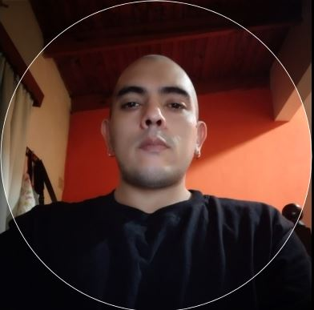

Nombre
Fernando Villalba Fernandez
Datos generales
Fecha de nacimiento:13/08/1985
Email: metrotelnandomail4@gmail.com
DNI: 31797684
Nacionalidad: argentina
Experiencia
Itaú Unibanco mar. 2022 - actualidad · 1 año Realizar el seguimiento y gestion de alertas ejecutar acciones de respuesta ante incidentes coordinando las actividades asociadas Supervisar y Coordinar mesa de trabajo Generacion de reporte del servicio Redaccion de informes Tecnicos Reguistro y control de metricas del servicio Gestionar los informes de la documentacion interna Herramientas , API´s, Atentus, APM, AS400, Splunk, Spectrum, APM WebView, AppDynamics, VMWare, oolbox, Splunk, Runscope, Nagios, Active Directory, Manejo de Ticketera: Invgate service desk, CA Service Desk Manager
Metrotel Argentina mar. 2012 - nov. 2021 · 9 años 9 meses Soporte on-site y manejo de medios y tecnologías de fibra óptica, cobre (ADSL, VDSL, LRE), Ethernet y wireless (radio enlaces y AP). Instalación y soporte de switches y routers (Cisco y otros), equipos SDH y PDH (Alcatel, Asga y Raisecom) y radio enlaces (MikroTik, Canopy y Orinoco Lucent). Instalación, calibración y mantenimiento de UPS en clientes y nodos (APC). Alta de enlaces y tendidos de cobre y fibra óptica. Seguimiento y medición de continuidad de cobre en cajas de distribución entre nodos y clientes finales mediante TDR y generadores de tono (Fluke y ProsKit). Mediciones de reflectometría y recepción de luz sobre fibra óptica mediante equipos OTDR (EXFO y SunSet). Mantenimiento preventivo de racks y nodos.
EDUCACION
E.E.M.N 9 Secundaria Completa